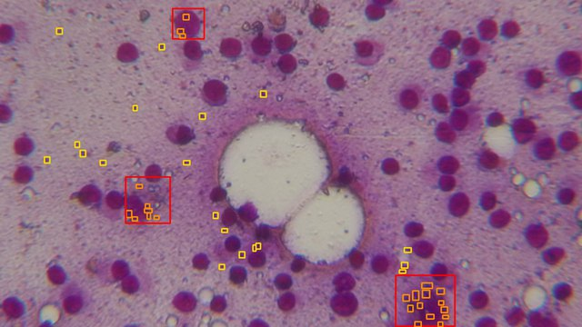
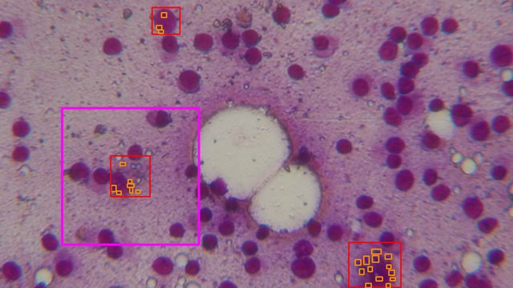
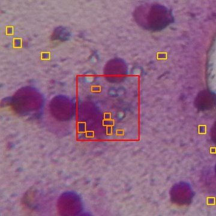
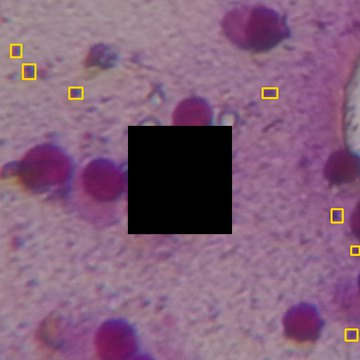
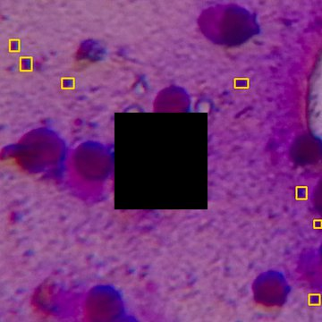
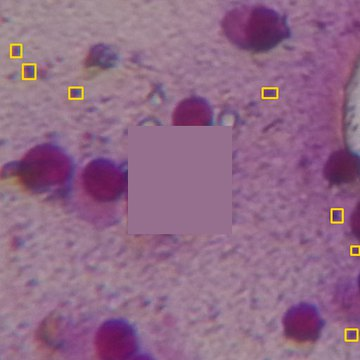

01_preprocessamento
Notebooks que transformam as anotações brutas do CVAT (00_dataset_cvat/) nos datasets usados pelos experimentos (02_datasets_derivados/). Rode na ordem numérica. O número de cada notebook é o mesmo da pasta que ele gera em 02_datasets_derivados/.
Fluxograma
A mesma imagem da leish_4 acompanhada por todas as etapas. Cada seta é um notebook (clique para ver a explicação dele), e cada quadro é a pasta que ele gera. Clique numa imagem para ampliar. leishmania fora do macrófago (alvo)leishmania dentro do macrófagomacrófago

00 · 00_dataset_cvat/
Dados brutos exportados do CVAT: 609 imagens 1920×1080 das 8 lâminas, com todas as classes anotadas.
Origem de tudo; não é alterado.

01 · 01_imagens_macrofagos_infectados/
599 imagens inteiras. Em vermelho, os macrófagos; em laranja, as leishmanias dentro deles, que indicam a infecção.
O quadro magenta é o recorte que a próxima etapa gera a partir de um desses macrófagos.
Entrada da etapa 02.

02 · 02_recortes_512/
1.568 recortes com todas as anotações. O macrófago está visível, com as leishmanias de dentro dele.
Usado nos exp01–exp05.

03 · 03_recortes_512_sem_macrofago/
Só o alvo (amarelo) continua anotado. 339 recortes ficam sem anotação e servem de negativos.
Usado nos exp08, 09, 10, 12 e 14.

04 · 04_recortes_512_sem_macrofago_reinhard/
Mesmo recorte, com a cor normalizada. A leish_4, acinzentada, fica roxa como a leish_7.
Usado no exp11.

05 · 05_recortes_512_macrofago_cor_fundo/
Anotações idênticas às da etapa 03; muda só a cor da área apagada.
Usado no exp13.
Visão geral
Rode os notebooks na ordem numérica. Cada um lê a saída de uma etapa anterior e grava em 02_datasets_derivados/, na pasta de mesmo número.
| Notebook | Entrada → saída (em 02_datasets_derivados/) | Resultado | Usado em |
|---|---|---|---|
01_filtrar_imagens_infectadas.ipynb | 00_dataset_cvat/ → 01_imagens_macrofagos_infectados/ | 599 de 609 imagens (1920×1080) | entrada da etapa 02 |
02_gerar_recortes_512.ipynb | 01_imagens_macrofagos_infectados/ → 02_recortes_512/ | 1.568 recortes · 10.688 instâncias de leishmania | exp01–exp05; entrada das etapas 03 e 05 |
03_mascarar_macrofago_nos_recortes.ipynb | 02_recortes_512/ → 03_recortes_512_sem_macrofago/ | 1.568 recortes · 339 sem anotação (servem de negativos) | exp08, exp09, exp10, exp12, exp14; entrada da etapa 04 |
04_normalizar_coloracao_reinhard.ipynb | 03_recortes_512_sem_macrofago/ → 04_recortes_512_sem_macrofago_reinhard/ | 1.568 recortes · o canal verde médio entre lâminas passou de 77–124 para 77–83 | exp11 |
05_mascarar_macrofago_cor_fundo.ipynb | 02_recortes_512/ → 05_recortes_512_macrofago_cor_fundo/ | 1.568 recortes · anotações idênticas às da etapa 03 (conferidas arquivo a arquivo) | exp13 |
O que cada arquivo faz
01 · Filtrar as imagens com macrófago infectado
01_filtrar_imagens_infectadas.ipynb
Extrai os zips exportados do CVAT (YOLO 1.1) e mantém só as imagens que têm ao menos uma anotação inside-macrophage, ou seja, algum macrófago infectado. Copia a imagem, o .txt original e o obj.names.
- Entrada:
00_dataset_cvat/ - Saída:
01_imagens_macrofagos_infectados/ - Resultado: 599 de 609 imagens (1920×1080)
- Usado em: entrada da etapa 02
02 · Gerar os recortes 512×512
02_gerar_recortes_512.ipynb
Para cada macrófago infectado (bbox macrophage que contém o centro de um inside-macrophage), gera um recorte 512×512 centrado nele. Se o recorte sairia da imagem, a janela é deslocada para dentro, sem esticar. As anotações de todas as classes são recalculadas para o recorte e cortadas na borda. No fim, mostra uma grade de 100 recortes para conferência visual.
- Entrada:
01_imagens_macrofagos_infectados/ - Saída:
02_recortes_512/ - Resultado: 1.568 recortes · 10.688 instâncias de
leishmania - Usado em: exp01–exp05; entrada das etapas 03 e 05
03 · Mascarar o macrófago (preto)
03_mascarar_macrofago_nos_recortes.ipynb
Pinta de preto a bbox de cada macrophage no recorte e remove as anotações macrophage e inside-macrophage. Mantém leishmania e Non-macrophages, mesmo quando se sobrepõem à área apagada. É a variação que deu o maior ganho da série (exp08 e exp09).
- Entrada:
02_recortes_512/ - Saída:
03_recortes_512_sem_macrofago/ - Resultado: 1.568 recortes · 339 sem anotação (servem de negativos)
- Usado em: exp08, exp09, exp10, exp12, exp14; entrada da etapa 04
04 · Normalizar a cor entre lâminas (Reinhard)
04_normalizar_coloracao_reinhard.ipynb
Normaliza a cor de cada lâmina para a da leish_7 pelo método de Reinhard: no espaço Lab, ajusta média e desvio de L, a e b, calculados para a lâmina inteira e ignorando a região preta. Mantém o preto e copia os .txt sem alteração. O Macenko foi testado antes e descartado, porque o modelo de dois corantes não se ajustou à coloração Giemsa. A justificativa da referência está no README do exp11.
- Entrada:
03_recortes_512_sem_macrofago/ - Saída:
04_recortes_512_sem_macrofago_reinhard/ - Resultado: 1.568 recortes · o canal verde médio entre lâminas passou de 77–124 para 77–83
- Usado em: exp11
05 · Mascarar o macrófago (cor do fundo)
05_mascarar_macrofago_cor_fundo.ipynb
Igual à etapa 03, mas preenche a bbox de cada macrophage com a cor mediana dos pixels fora dos macrófagos do recorte, e não com preto. Assim, a área apagada não tem as bordas artificiais fortes do retângulo preto.
- Entrada:
02_recortes_512/ - Saída:
05_recortes_512_macrofago_cor_fundo/ - Resultado: 1.568 recortes · anotações idênticas às da etapa 03 (conferidas arquivo a arquivo)
- Usado em: exp13
Outros arquivos
| Arquivo | O que é |
|---|---|
divisao_folds_por_lamina.jpeg | Esquema da validação cruzada: 6 folds por lâmina, com 5 lâminas de treino, 1 de validação e 2 de teste. É a mesma divisão em todos os experimentos. |
README.html | Esta página. |

Como funcionam
- Idempotentes: cada etapa verifica se a pasta de saída já tem conteúdo e, se tiver, pula a geração. Para gerar de novo, apague (ou renomeie) a pasta de saída.
- Caminhos: a raiz do projeto fica definida na célula de parâmetros (
diretorio_raiz = Path("/mnt/arquivos/Doutorado")). Entrada e saída são derivadas dela. - Formato: em todas as saídas, cada lâmina tem sua subpasta
leish_N/, com pares.png+.txtYOLO (classe xc yc w h, normalizados). Oobj.namesfica na raiz de cada dataset. - Classes (
obj.names):0 Non-macrophages·1 macrophage·2 leishmania(alvo: fora do macrófago) ·3 inside-macrophage.
O que não está aqui
- Aumento de cor HED (exp12): é feito durante o treino, dentro do notebook do experimento, e não gera dataset.
- Variantes de cor antigas (
exp06_recortes_512_realce_clahe,exp07_recortes_512_lab): foram geradas dentro dos notebooks dos experimentos exp06 e exp07 (03_experimentos anteriores/), e não aqui. - Estrutura YOLO dos folds (
images/+labels/com classe única): é montada dentro de cada notebook de experimento, a partir de um destes datasets.
Histórico
- Reorganizado em 17 nov. 2026. Os notebooks foram renomeados e os caminhos atualizados. O notebook 02 deixou de repetir as etapas do 01 (antes refazia a filtragem inteira) e passou a ler a saída do 01.
- Na reorganização, as etapas 02 e 03 foram executadas de novo numa pasta temporária, e o resultado foi byte a byte idêntico aos datasets existentes. Os notebooks 01 a 03 rodam com os caminhos atuais.
- 18 nov. 2026: a explicação de cada arquivo, antes no resumo dos experimentos, passou a ficar só aqui.
- 18 nov. 2026: criadas as etapas 04 (normalização de cor) e 05 (máscara com a cor do fundo), para os exp11 e exp13.
- As versões originais estão em
03_experimentos anteriores/legado/preprocessamento_original/.